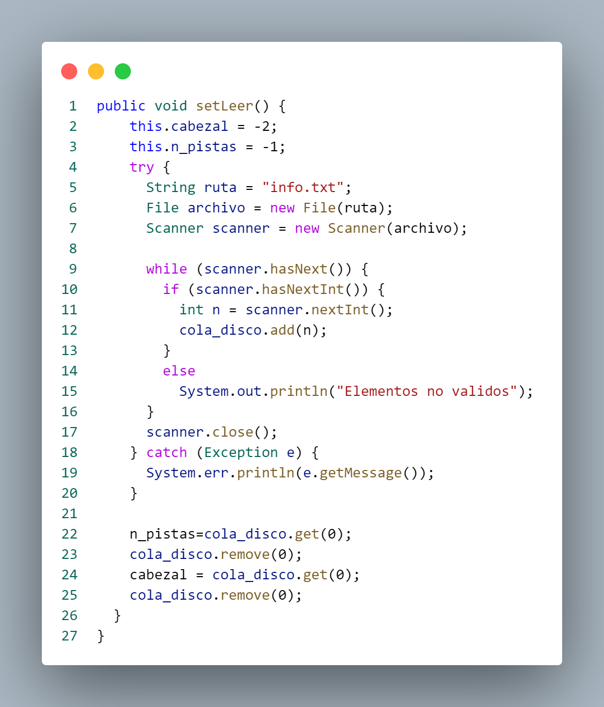

|
Funcionamiento de código
Implementación.java
CLook.java
Librerias
Este fragmento de código Java establece un
paquete denominado `Implementacion`, que
se utiliza para organizar clases relacionadas
y evitar conflictos de nombres. Además, se
importa la clase `ArrayList` del paquete
`java.util`, que proporciona una implementación
de lista dinámica para almacenar elementos
de manera flexible.
Clase CLook
La clase `CLook` se utiliza para implementar
la lógica del algoritmo de planificación de
discos conocido como "CLook". La clase tiene
dos constructores: uno predeterminado que
inicializa las listas asociadas con la
planificación de discos, y otro que toma
parámetros para configurar la instancia
con una cola de discos, posición inicial
del cabezal y el número total de pistas.
Estos constructores permiten la creación
de instancias de `CLook` con diferentes
configuraciones iniciales para su aplicación
en la planificación de discos.
Metodo Algoritmo CLook
El método `AlgoritmoCLook` implementa el
algoritmo de planificación de discos
denominado "CLook". Comienza agregando
la posición actual del cabezal a la cola
de discos, la ordena en orden ascendente
y determina la posición inicial del cabezal
en la cola ordenada. Luego, reorganiza la
cola para simular el movimiento unidireccional
del cabezal. Calcula las distancias entre
pistas consecutivas, las almacena en la lista
`resta`, y calcula el promedio de estas
distancias. Este método simula el comportamiento
del algoritmo CLook para evaluar la eficiencia
de la planificación de discos.
CScan.java
Librerias

Este fragmento de código Java establece un
paquete denominado `Implementacion`, que
se utiliza para organizar clases relacionadas
y evitar conflictos de nombres. Además, se
importa la clase `ArrayList` del paquete
`java.util`, que proporciona una implementación
de lista dinámica para almacenar elementos
de manera flexible.
Clase CScan
La clase `CScan` se utiliza para implementar
la lógica del algoritmo de planificación de
discos conocido como "CScan". La clase tiene
dos constructores: uno predeterminado que
inicializa las listas asociadas con la
planificación de discos, y otro que toma
parámetros para configurar la instancia con
una cola de discos, posición inicial del
cabezal y el número total de pistas. Estos
constructores permiten la creación de instancias
de `CScan` con diferentes configuraciones
iniciales para su aplicación en la planificación
de discos.
Metodo Algoritmo CScan
El método `AlgoritmoCScan` implementa el algoritmo
de planificación de discos denominado "CScan".
Primero, agrega la posición actual del cabezal a
la cola de discos y la ordena en orden ascendente.
Luego, reorganiza la cola para simular el movimiento
unidireccional del cabezal en un sentido específico,
limitando este movimiento. Calcula las distancias
entre pistas consecutivas, almacena estas distancias
en la lista `resta`, y calcula el promedio de estas
distancias.
Fcfs.java
Librerias

Este fragmento de código Java establece un
paquete denominado `Implementacion`, que
se utiliza para organizar clases relacionadas
y evitar conflictos de nombres. Además, se
importa la clase `ArrayList` del paquete
`java.util`, que proporciona una implementación
de lista dinámica para almacenar elementos
de manera flexible.
Clase Fcfs

La clase `Fcfs` se utiliza para implementar
la lógica del algoritmo de planificación de
discos conocido como "First-Come, First-Served"
(FCFS). La clase tiene dos constructores: uno
predeterminado que inicializa las listas
asociadas con la planificación de discos,
y otro que toma parámetros para configurar
la instancia con una cola de discos, posición
inicial del cabezal y el número total de pistas.
Metodo Algoritmo Fcfs
El método `algoritmoFcfs` implementa el
algoritmo de planificación de discos
conocido como "First-Come, First-Served"
(FCFS). Calcula las distancias entre el
cabezal y los elementos consecutivos en
la cola de discos, acumula estas distancias
en una variable suma y luego calcula el
promedio de estas distancias mediante el
método `setPromedio()`. Este enfoque FCFS
evalúa la eficiencia de la planificación de
discos considerando el orden de llegada de
las solicitudes, proporcionando una medida
del rendimiento del sistema en términos de
movimientos del cabezal de lectura/escritura.
Look.java
Librerias
Este fragmento de código Java establece un
paquete llamado `Implementacion` para organizar
clases relacionadas. Además, importa las
clases `ArrayList` y `Collections` del paquete
`java.util`. La clase `ArrayList` se utiliza
para implementar listas dinámicas, y `Collections`
proporciona métodos estáticos para realizar
operaciones en colecciones, como ordenar elementos.
Estas importaciones sugieren que en el contexto
de este paquete se pueden utilizar listas dinámicas
y operaciones de colecciones para implementar
funcionalidades específicas en clases Java.
Clase Look
La clase `Look` se utiliza para implementar
la lógica del algoritmo de planificación de
discos conocido como "Look". La clase tiene
dos constructores: uno predeterminado que
inicializa las listas asociadas con la
planificación de discos, y otro que toma
parámetros para configurar la instancia con
una cola de discos, posición inicial del
cabezal y el número total de pistas.
Metodo Algoritmo Look
El método `AlgoritmoLook` implementa el
algoritmo de planificación de discos "Look".
Inicializa la cola de discos con la posición
actual del cabezal, la ordena y determina
la posición del cabezal en la cola. Luego,
reorganiza la cola para simular el movimiento
bidireccional del cabezal y calcula las distancias
entre pistas consecutivas, almacenándolas en
la lista `resta`. El promedio de estas distancias
se calcula mediante el método `setPromedio()`.
Implementación.java
CLook.java
Librerias
Este fragmento de código Java establece un
paquete denominado `Implementacion`, que
se utiliza para organizar clases relacionadas
y evitar conflictos de nombres. Además, se
importa la clase `ArrayList` del paquete
`java.util`, que proporciona una implementación
de lista dinámica para almacenar elementos
de manera flexible.
Clase CLook
La clase `CLook` se utiliza para implementar
la lógica del algoritmo de planificación de
discos conocido como "CLook". La clase tiene
dos constructores: uno predeterminado que
inicializa las listas asociadas con la
planificación de discos, y otro que toma
parámetros para configurar la instancia
con una cola de discos, posición inicial
del cabezal y el número total de pistas.
Estos constructores permiten la creación
de instancias de `CLook` con diferentes
configuraciones iniciales para su aplicación
en la planificación de discos.
Metodo Algoritmo CLook
El método `AlgoritmoCLook` implementa el
algoritmo de planificación de discos
denominado "CLook". Comienza agregando
la posición actual del cabezal a la cola
de discos, la ordena en orden ascendente
y determina la posición inicial del cabezal
en la cola ordenada. Luego, reorganiza la
cola para simular el movimiento unidireccional
del cabezal. Calcula las distancias entre
pistas consecutivas, las almacena en la lista
`resta`, y calcula el promedio de estas
distancias. Este método simula el comportamiento
del algoritmo CLook para evaluar la eficiencia
de la planificación de discos.
Planificacion.java
Librerias
Este fragmento de código en Java establece
un paquete llamado `Implementacion` e importa
las clases `File` y `Scanner` del paquete
`java.io`. La clase `File` se utiliza para
representar y manipular rutas de archivos
o directorios, mientras que la clase `Scanner`
se utiliza para leer datos de diversas fuentes,
incluidos archivos. Estas importaciones sugieren
que en el contexto de este paquete se pueden
realizar operaciones relacionadas con archivos
y entrada de datos utilizando la clase `Scanner`.
Clase Planificacion

La clase `Planificacion` en Java sirve
como un marco para la implementación de
algoritmos de planificación de discos.
Contiene atributos protegidos, como
listas para la cola de discos, distancias
entre pistas y resultados, así como
variables para el número de pistas, la
suma de distancias, el promedio de
distancias y la posición actual del cabezal.
Su constructor predeterminado inicializa
estos elementos, proporcionando una base
común para las clases que extienden
`Planificacion` y permitiendo la
implementación específica de algoritmos
de planificación de discos utilizando
esta estructura como punto de partida.
Metodo Planificaión
Este constructor de la clase `Planificacion`
en Java toma tres parámetros: una lista de
enteros (`cola_disco`), un entero (`cabezal`),
y otro entero (`n_pistas`). Su función es
inicializar los atributos de la clase con
los valores proporcionados como argumentos.
En otras palabras, establece la cola de
discos (`cola_disco`), la posición inicial
del cabezal (`cabezal`), y el número total
de pistas (`n_pistas`) con los valores pasados
como parámetros al crear una instancia de la
clase `Planificacion`. Este constructor es
útil cuando se desea configurar una instancia
de `Planificacion` con valores específicos
al momento de su creación.
Metodo getCola_disco
Este método tiene como función proporcionar
acceso a la lista de enteros `cola_disco`
desde fuera de la clase. Es un método de
acceso o getter que devuelve la lista
`cola_disco` cuando se invoca. Permitir
el acceso a través de este método permite
que otras clases obtengan la cola de discos
almacenada en una instancia de la clase
`Planificacion` sin acceder directamente
a la variable de instancia.
Metodo get y set Cabezal
Los métodos `getCabezal` y `setCabezal`
siguen el patrón getter-setter para
proporcionar acceso controlado al atributo
`cabezal`. `getCabezal` actúa como un
getter que devuelve la posición actual
del cabezal, permitiendo su lectura desde
otras clases, mientras que `setCabezal`
funciona como un setter que permite
modificar la posición del cabezal al
asignarle un nuevo valor.
Metodo setCola_disco
Este método tiene como función permitir que
se establezca una nueva lista de enteros como
valor para el atributo `cola_disco` de la
instancia de la clase. El método toma una
lista de enteros como parámetro y asigna esa
lista al atributo `cola_disco`, actualizando
así el estado interno de la instancia con la
nueva cola de discos proporcionada.
Metodo leerElemento
Este método tiene como función agregar un
elemento entero `i` a la lista `cola_disco`
de la instancia de la clase. En otras palabras,
este método se utiliza para incorporar nuevos
elementos a la cola de discos. Cada vez que
se invoca este método con un parámetro entero,
ese valor se añade a la lista `cola_disco`,
lo que permite la construcción dinámica de la
cola de discos durante la ejecución del programa.
Metodo getSuma
Este método tiene como función calcular y
devolver la suma de los elementos almacenados
en la lista `resta`. Primero, realiza un
bucle `for-each` sobre la lista `resta`,
acumulando cada elemento en la variable
`suma`. Finalmente, devuelve el resultado
de la suma. Cabe mencionar que este método
puede modificar el estado interno de la
instancia al sumar los elementos, por lo
que es importante comprender su comportamiento
al utilizarlo en un programa más extenso.
Metodo get y set Promedio
Los métodos `setPromedio` y `getPromedio`
están diseñados para calcular y proporcionar
acceso al promedio de los elementos contenidos
en la lista `cola_disco`. El método `setPromedio`
realiza el cálculo dividiendo la suma de los
elementos entre el tamaño de la cola de discos,
almacenando el resultado como un número decimal
en el atributo `promedio`. Por otro lado, el
método `getPromedio` actúa como un getter,
devolviendo el valor actual del atributo
`promedio`, permitiendo así a otras clases
obtener el promedio calculado.
Metodo verResultado
Este método tiene como función imprimir en
la consola información detallada sobre el
resultado del proceso de planificación de
discos. Muestra la posición actual del cabezal,
la cola de discos, la lista de distancias
entre pistas (`resta`), la suma de estas
distancias (`suma`), y el promedio de las
distancias.
Metodo setLeer

El método `setLeer` configura el estado
interno de la instancia utilizando datos
leídos desde el archivo "info.txt".
Inicializa valores predeterminados para
el cabezal y el número de pistas, luego
utiliza un objeto `Scanner` para leer
enteros desde el archivo y los agrega
a la lista `cola_disco`. Después de
cerrar el `Scanner`, actualiza el número
total de pistas y la posición inicial del
cabezal utilizando los primeros dos elementos
de la lista `cola_disco`, eliminando estos
elementos de la lista. En caso de errores
durante la lectura del archivo, imprime un
mensaje de error en la consola. Este método
permite cargar información desde un archivo
de texto y configurar dinámicamente el estado
de la instancia de la clase `Planificacion`.
Resultados.java
Clase Resultados
La clase tiene
dos atributos privados, `algoritmo` y `promedio`,
que representan el nombre de un algoritmo y el
promedio asociado, respectivamente. La clase
implementa la interfaz `Comparable`,
permitiendo la comparación de instancias basándose
en sus promedios. Además, proporciona dos constructores:
uno sin parámetros y otro que inicializa los
atributos con valores específicos.
Metodo get y set Algoritmo y Promedio
Estos métodos facilitan el acceso y la
modificación de los atributos privados
de la clase. El método `getPromedio`
devuelve el valor del atributo `promedio`,
que representa el promedio asociado al
resultado. Similarmente, el método `getAlgoritmo`
devuelve el valor del atributo `algoritmo`,
que representa el nombre del algoritmo asociado.
Por otro lado, los métodos `setAlgoritmo` y
`setPromedio` permiten establecer nuevos valores
para los atributos `algoritmo` y `promedio`,
respectivamente, proporcionando una forma de
actualizar la información almacenada en instancias
de la clase `Resultados`.
Metodo compareTo
Este método implementa la interfaz
`Comparable`, permitiendo
la comparación de instancias basándose
en sus valores de promedio. Utiliza
la función `Double.compare()` para
realizar la comparación, retornando
un valor negativo si el promedio de
la instancia actual es menor que el
de la instancia pasada como parámetro,
cero si son iguales, y un valor positivo
si el promedio de la instancia actual
es mayor. Este método facilita el
ordenamiento de instancias de la clase
`Resultados` según sus promedios al
utilizar métodos de ordenación como `Collections.sort()`.
Scan.java
Librerias

El código importa las clases `ArrayList` y
`Collections` del paquete `java.util` en Java.
`ArrayList` es una estructura de datos que
implementa listas dinámicas, permitiendo
cambios de tamaño dinámicos. `Collections`
proporciona métodos de utilidad para operaciones
comunes en colecciones, como ordenar elementos.
Estas importaciones sugieren que el código
puede hacer uso de listas dinámicas y funciones
de manipulación de colecciones.
Clase Scan
Esta clase Java llamada `Scan` extiende la
clase `Planificacion`. En el constructor
sin parámetros (`Scan()`), inicializa
instancias de las listas `cola_disco`,
`resta`, y `Resultados`. En el segundo
constructor (`Scan(ArrayList cola,
int cabezal, int n_pistas)`), la clase
utiliza el constructor de la clase base
`Planificacion` para inicializar la lista
`cola_disco` y otros atributos con los valores
proporcionados. Estos constructores sugieren
que la clase `Scan` se utiliza para representar
y gestionar información relacionada con un
algoritmo de planificación de discos específico,
en este caso, el algoritmo SCAN.
Metodo Algoritmo Scan
Este método `AlgoritmoScan()` implementa el
algoritmo de planificación de discos SCAN.
En primer lugar, se añade el cabezal a la
lista `cola_disco`, que representa la secuencia
de solicitudes de pistas del disco. Luego,
la lista se ordena, y se determina la posición
del cabezal en la cola. Se crean dos subconjuntos
de la cola, uno desde la posición del cabezal
hasta el final y otro desde el principio hasta
la posición del cabezal. Estos subconjuntos se
combinan de manera específica para simular el
movimiento del cabezal en un patrón SCAN. Se
calcula la distancia de búsqueda (resta) entre
pistas consecutivas y se acumula la suma total.
Finalmente, se calcula y establece el promedio
de la distancia de búsqueda. Este método modela
el comportamiento del algoritmo SCAN en la
planificación de discos, donde el cabezal se
mueve en una dirección hasta alcanzar un extremo
del disco y luego se invierte.
Sstf.java
Librerias

Este fragmento de código en Java simplemente
importa la clase `ArrayList` del paquete
`java.util`. La clase `ArrayList` es una
implementación de la interfaz `List` que
utiliza un arreglo dinámico para almacenar
elementos y proporciona métodos para manipular
esa lista, como agregar, eliminar y acceder
a elementos. La importación de `ArrayList`
indica que el código puede hacer uso de
listas dinámicas para almacenar y manipular
conjuntos de elementos de manera eficiente.
Clase Sstf
Esta clase Java llamada `Sstf` extiende la
clase `Planificacion`. En el primer constructor
(`Sstf()`), inicializa instancias de las listas
`cola_disco`, `resta`, y `Resultados`. En el
segundo constructor (`Sstf(ArrayList
cola, int cabezal, int n_pistas)`), la clase
utiliza el constructor de la clase base
`Planificacion` para inicializar la lista
`cola_disco` y otros atributos con los valores
proporcionados. Estos constructores sugieren
que la clase `Sstf` se utiliza para representar
y gestionar información relacionada con un
algoritmo de planificación de discos específico,
en este caso, el algoritmo SSTF (Shortest Seek Time First).
Metodo Algoritmo Sstf
Este método `AlgoritmoSstf()` implementa el
algoritmo de planificación de discos SSTF
(Shortest Seek Time First). En primer lugar,
llama al método `Ordenar()`, que ordena la
lista `cola_disco` de acuerdo con las distancias
del cabezal a cada elemento de la cola.
Luego, calcula la distancia de búsqueda
(resta) entre el cabezal y el primer elemento
de la cola, así como entre cada par consecutivo
de elementos en la cola. La suma de estas
distancias se acumula en la variable `suma`.
Finalmente, se llama al método `setPromedio()`
para calcular y establecer el promedio de la
distancia de búsqueda. Este método refleja
el comportamiento del algoritmo SSTF, que busca
atender las solicitudes de pistas del disco
en orden ascendente de distancia al cabezal,
minimizando así el tiempo de búsqueda.
Metodo Ordenar
Este método `Ordenar()` implementa la lógica
de ordenación de la cola de discos según el
algoritmo SSTF (Shortest Seek Time First).
Inicialmente, se guarda la posición actual
del cabezal en la variable `cabezal_old`.
Luego, se ordena la lista `cola_disco` en
orden ascendente. Se utiliza un bucle para
iterar sobre los elementos de la cola,
encontrando el cilindro solicitado más cercano
al cabezal en cada iteración y moviendo el
cabezal a esa posición. La posición del cabezal
y el cilindro solicitado más cercano se agregan
a una nueva cola (`nueva_cola`), y el cilindro
se elimina de la cola original. Este proceso se
repite hasta que la cola original esté vacía.
Al finalizar, se restablece la posición original
del cabezal y se actualiza la lista `cola_disco`
con la nueva cola ordenada según el algoritmo SSTF.
Este método prepara la cola de discos para ser
procesada por el algoritmo SSTF.
Main.java
Librerias
Este fragmento de código en Java importa
las clases `BufferedReader` e `InputStreamReader`
del paquete `java.io` y la clase `ArrayList`
del paquete `java.util`. Estas clases son
comúnmente utilizadas para operaciones de
entrada y salida y para gestionar colecciones
dinámicas, respectivamente.
Clase Main
Este fragmento de código Java representa
un menú interactivo en la consola para
seleccionar diferentes algoritmos de
planificación de disco. Utiliza la clase
`BufferedReader` para leer la entrada del
usuario y un bucle `while` para presentar
continuamente el menú hasta que el usuario
elige salir (opción 8). Dentro del bucle,
se utiliza una instrucción `switch` para
manejar las diferentes opciones seleccionadas
por el usuario.
Caso 1
Cuando el usuario selecciona "1", se crea
una instancia de la clase `Fcfs`. Luego,
se llama al método `setLeer()` para leer
los datos de entrada, seguido por la ejecución
del algoritmo mediante la llamada a `algoritmoFcfs()`.
Posteriormente, se imprime el resultado
utilizando el método `verResultado()`.
Finalmente, se crea un objeto `Resultados`
con la etiqueta "FCFS" y el promedio calculado
por el algoritmo, y este objeto se agrega a
una lista de resultados llamada `resultados`.
Caso 2
Cuando el usuario selecciona "2", se crea
una instancia de la clase `Sstf`. Luego,
se llama al método `setLeer()` para leer
los datos de entrada, seguido por la ejecución
del algoritmo mediante la llamada a
`AlgoritmoSstf()`. Posteriormente, se imprime
el resultado utilizando el método `verResultado()`.
Finalmente, se crea un objeto `Resultados`
con la etiqueta "SSTF" y el promedio calculado
por el algoritmo, y este objeto se agrega
a una lista de resultados llamada `resultados`.
Caso 3
Cuando el usuario selecciona "3", se crea
una instancia de la clase `Scan`. Luego,
se llama al método `setLeer()` para leer
los datos de entrada, seguido por la ejecución
del algoritmo mediante la llamada a
`AlgoritmoScan()`. Posteriormente, se imprime
el resultado utilizando el método `verResultado()`.
Finalmente, se crea un objeto `Resultados`
con la etiqueta "SCAN" y el promedio calculado
por el algoritmo, y este objeto se agrega a
una lista de resultados llamada `resultados`.
Caso 4
Cuando el usuario selecciona "4", se crea
una instancia de la clase `CScan`. Luego,
se llama al método `setLeer()` para leer
los datos de entrada, seguido por la ejecución
del algoritmo mediante la llamada a
`AlgoritmoCScan()`. Posteriormente, se imprime
el resultado utilizando el método `verResultado()`.
Finalmente, se crea un objeto `Resultados`
con la etiqueta "CSCAN" y el promedio calculado
por el algoritmo, y este objeto se agrega
a una lista de resultados llamada `resultados`.
Caso 5
Cuando el usuario selecciona "5", se crea
una instancia de la clase `Look`, que
probablemente implementa el algoritmo de
planificación de disco "LOOK". Luego, se
llama al método `setLeer()` para leer los
datos de entrada, seguido por la ejecución
del algoritmo mediante la llamada a
`AlgoritmoLook()`. Posteriormente, se imprime
el resultado utilizando el método `verResultado()`.
Finalmente, se crea un objeto `Resultados`
con la etiqueta "LOOK" y el promedio calculado
por el algoritmo, y este objeto se agrega a
una lista de resultados llamada `resultados`.
Caso 6
Cuando el usuario selecciona "6", se crea
una instancia de la clase `CLook`. Luego,
se llama al método `setLeer()` para leer
los datos de entrada, seguido por la ejecución
del algoritmo mediante la llamada a
`AlgoritmoCLook()`. Posteriormente, se imprime
el resultado utilizando el método `verResultado()`.
Finalmente, se crea un objeto `Resultados`
con la etiqueta "CLOOK" y el promedio calculado
por el algoritmo, y este objeto se agrega a
una lista de resultados llamada `resultados`.
Caso 7
Cuando el usuario selecciona "7", se verifica
si la lista de resultados (`resultados`) no
está vacía. En caso afirmativo, los resultados
se ordenan y se imprime el nombre del algoritmo
junto con su promedio para cada entrada en la
lista de resultados. Además, se imprime el
nombre del algoritmo con el mejor promedio,
ya que la lista está ordenada y el mejor
resultado está en la primera posición. Si la
lista de resultados está vacía, se imprime un
mensaje indicando que no hay datos.
Caso 8
Cuando el usuario selecciona "8", se
imprime un mensaje indicando que el
programa está saliendo y se rompe el
bucle, lo que lleva a la conclusión
del programa. Si el usuario ingresa una
opción que no coincide con ninguna de
las opciones del menú, se imprime un
mensaje indicando que se debe ingresar
una opción válida.
|